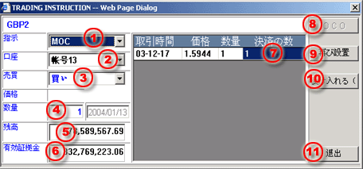

MOO/MOC注文について
取引パネルによって取引指示ダイアログが起動した場合、以下のインフォーメションを完了します。
| 1 | タイプ - 市場オープンに対して取引を開始する為にＭＯＯを選択します、又は、市場をクローズするためにＭＯＯを選択します。 |
 MOC
Order processing dialog |
| 2 | 口座 - オーダーする取引口座を選択します。 | |
| 3 | 売買 - 注文に対し売り又は買いを選択します。 | |
| 4 | 枚数 - 取引したい枚数を入力します。 | |
| 5 | 残高 - 選定した口座の追加金額の残高です。 | |
| 6 | 維持証拠金 - 選択した口座の証拠金残高のことです。 | |
| 7 | 閉じる - 決済する取引であれば、新と一致する枚数入力してください。 | |
| 8 | OCO - 適用されない | |
| 9 | リセット - 終了するために枚数をリセットするボタンです。 | |
| 10 | 受ける（F8） - 取引デスクに発注する為のボタン。 | |
| 11 | 退去 - 引取指示ダイアログを終了する為のボタンを押します。 |
MKTオーダーが取引デスクに対し成約出来た場合に、又は、活動オーダーパネルに登録された“未確認”という表示とその注文が受理された証拠として裏書されます。いかなる理由があろうと“取消”という表示又は“未確認”という表示がが“確認済”となっていない限り消えません。
備考：